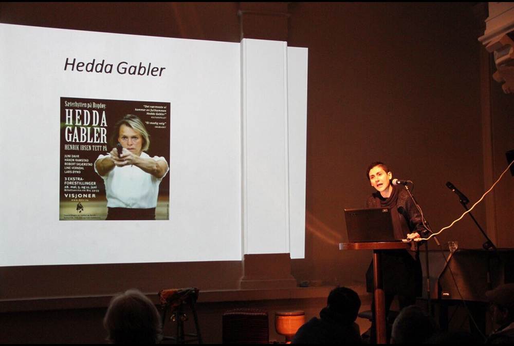
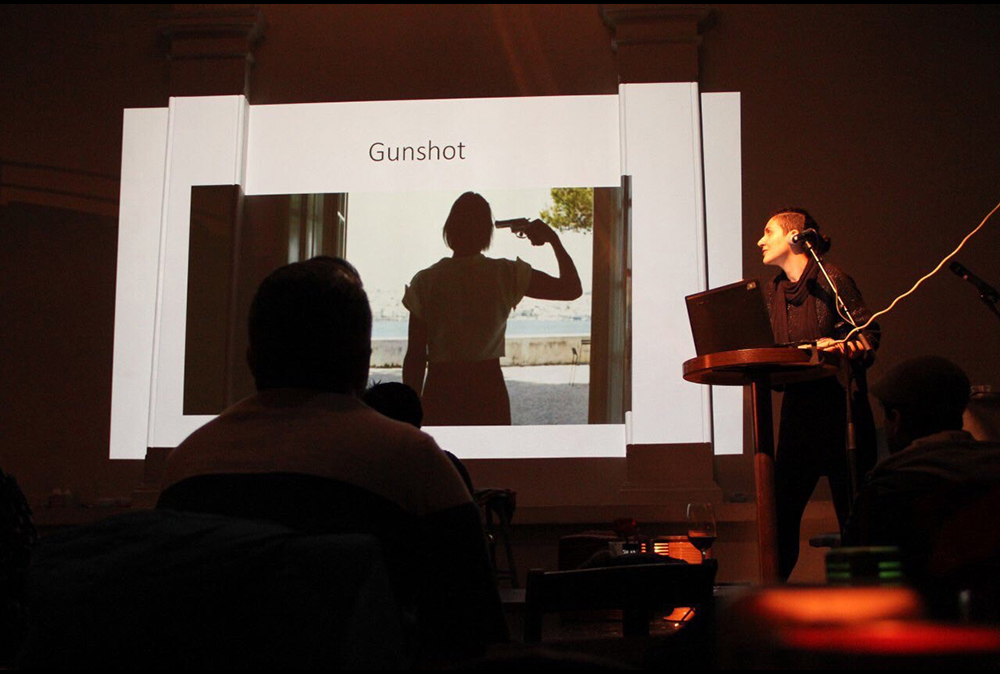
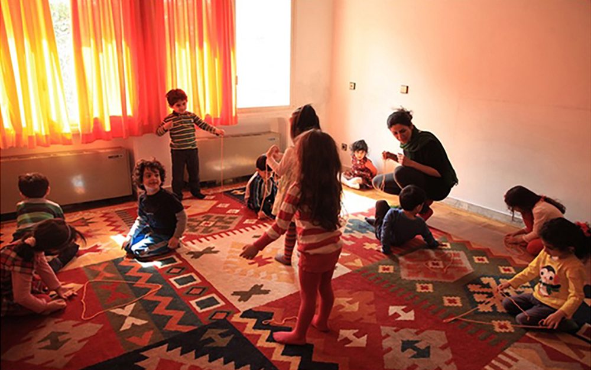
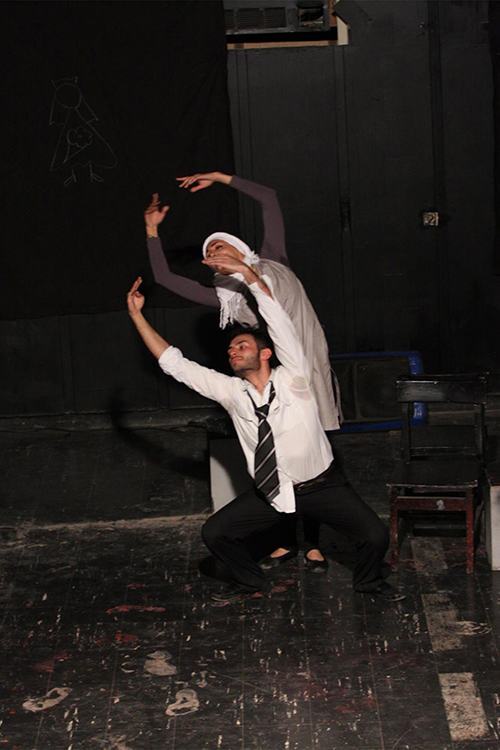
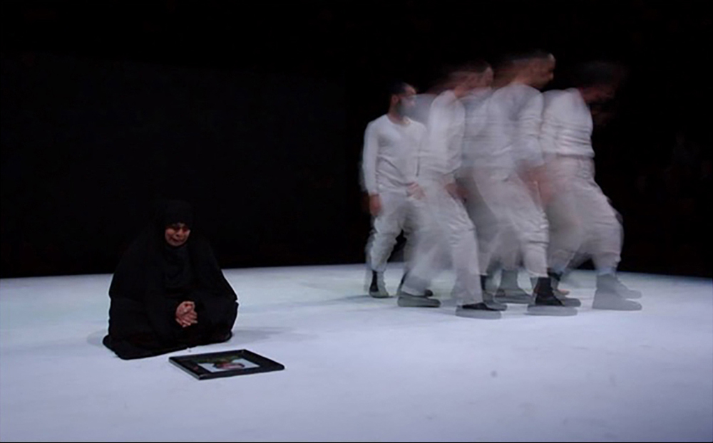
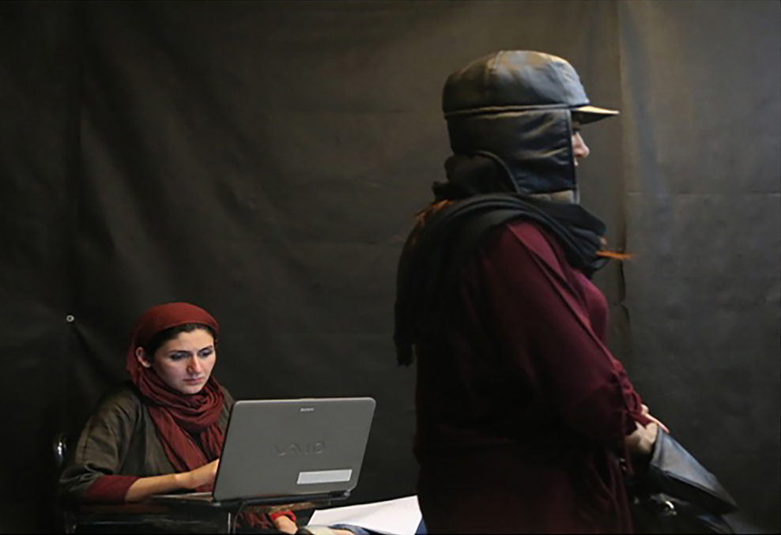
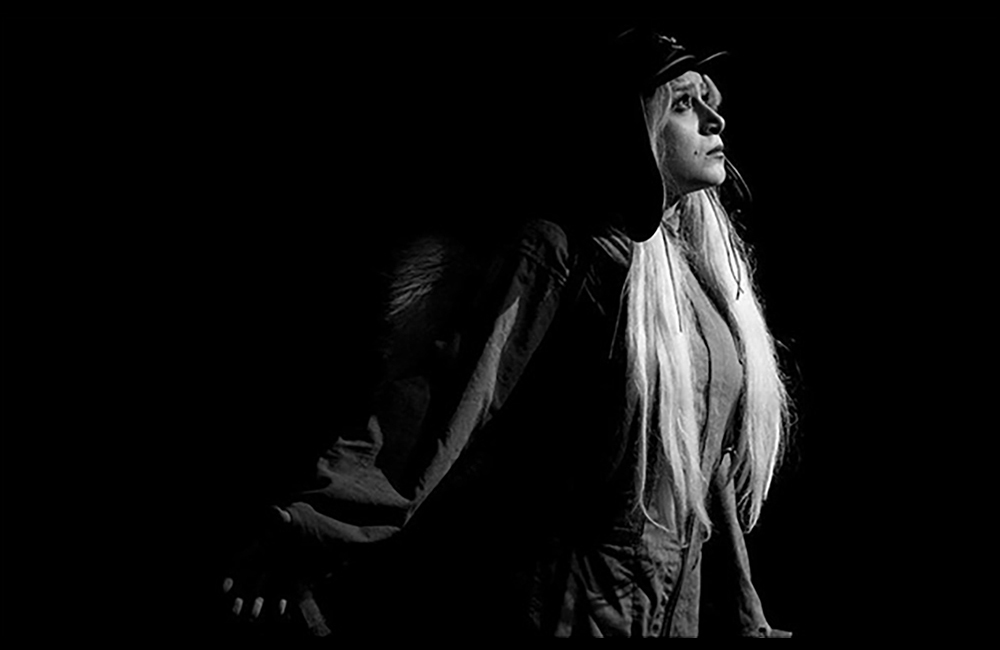

WANGEL: Men nu altså, – nu er du fuldt ud løst fra mig og mit. Og fra mine. Nu kan dit eget rigtige liv – komme ind på – på sit rette spor igen. For nu kan du vælge i frihed. Og under eget ansvar, Ellida.
ELLIDA: (griber sig om hodet og stirrer frem for sig imod Wangel).
I frihed og - og under ansvar! Under ansvar også? - Der er - forvandling i dette her!
(Dampskibsklokken lyder atter.)
“Ghamar dar Aghrab" at Nordic Black Theatre and Café theatre, Oslo (May 2019)
After a successful workshop at University, I selected some of them to have a performance at Nordic Black Theatre. We got very positive feedback from this performance. The video production is available by request.
“Ghamar dar Aghrab" at Nordic Black Theatre and Café theatre, Oslo (May 2019)
“Ghamar dar Aghrab" at Nordic Black Theatre and Café theatre, Oslo (May 2019)
“Hamlet" Universitet i Oslo (Dec 2018)
I held some theatre workshops for Iranian amateur people here in Oslo. They are theatre enthusiasms who really like to act on stage. The result was amazing, th were very good actors among them.
“Hamlet" Universitet i Oslo (Dec 2018)
“Hamlet" Universitet i Oslo (Dec 2018)
Master Thesis: "Hedda med og uten Hijab" (2018)
Hedda Gabler starring Juni Dahr performed as a part of the international Ibsen festival at Sæterhytten in Oslo on September 2016. Also, this group performed Hedda Gabler at the 34th Fajr International Theatre Festival (FITF) in Tehran (Iran) in January 2016 at Masoudieh Palace. Based on the Iranian context Norwegian actor wore the hijab and the group made several adjustments.
In this thesis, I did analyse the video production of Hedda Gabler at Masudieh Palace and compared it to the Norwegian versions at Sæterhytten. I tried to find out how this group adapted and adjust this performance to an Iranian context. How did some factors like hijab and censorship affect this staging of Ibsen? Could they disseminate the same messages in two different cultural contexts? I argue that censorship can sometime play a positive role on a performance because limitation coming from the censorship can provide or force artist be more creative in order to adjust themselves to cultural differences and fins new ways to express their art.
The purpose of my thesis was to enlighten readers about Iranian cultural contexts and the challenges that artists and artistic groups experience when they perform their works in Iran.

Master Thesis: "Hedda med og uten Hijab" - The influence of diffrerent sites on Juni Dahr’s Hedda Gabler (2018)
Master Thesis: "Hedda med og uten Hijab" - The influence of diffrerent sites on Juni Dahr’s Hedda Gabler (2018)

Master Thesis: "Hedda med og uten Hijab" - The influence of diffrerent sites on Juni Dahr’s Hedda Gabler (2018)
Theater teacher (2014-2015)
I have worked as a theater teacher at preschool (kindergarten) which has been very challenging and inspiring for me. In my class, I put my kids in the dramatic situation or I read the first parts of stories and let them continue with their creativities. Most of the time at the end of class, I asked them to paint their experiences. They shocked me with their amazing paintings and creativity.

Theater teacher (2014-2015)
Working as a Playright (2012)
"Penumbra" (2012) is about the routine life of Iranian couple. This theater performed at Noghte Festival and I got a price for the best playwright.

Working as a Radio Playwright (2010-Now)
1. Trash of the apartment number 12
This radio series is about stories of some families who live in this apartment. It has environmental themes. In every episode, I wrote about one problem that threats our universe.
2. Martyr Babaei
This radio adaption series is about the life of Abbas Babaei who died at war between Iran and Iraq. I wrote this series based on his daily diary.
3. Blue Room
This radio production is about the stories of two classmate (two girls in the age of 7) who decided to change their sibling with each other.
4. Shirin “Sweet”
This radio series is about a stories of every session of one therapist who name is “Shirin”. Shirin means sweet in Farsi.
Working as a group manager in theater (2012-2013)
"7 days in New York City with uninvited guest” Director: Fahad Aeish, City theater, Tehran, Iran (2012)
"My lonely city" (adaption of A Doll House), Directed by Ali Hashemi, Tehran, Iran (2013)

"Naneh" Directed by Samira Sinai, Choreographer: Fehér Richard, Hafez Theater, Tehran, Iran (2011)

For "Iron Man" Directed by Pejam Abidi, Mashaykhi Theater, Tehran, Iran (2014)

For "Iron Man" Directed by Pejam Abidi, Mashaykhi Theater, Tehran, Iran (2014)
She Entrepreneurs
My project in this program was about “Cosmetic surgery and Iranian women”. Iran has a high rate of cosmetic surgery and this number increases every year. I wrote a story about a girl whose boyfriend tries to convince her to change her appearance.